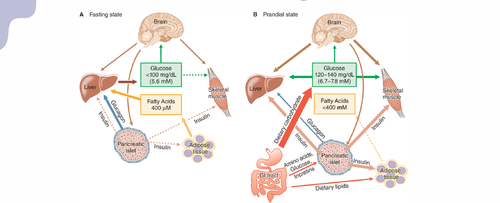
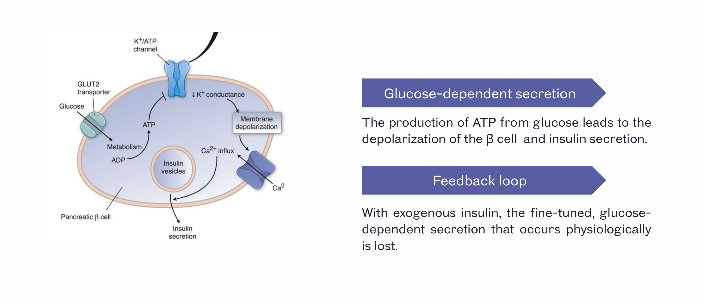
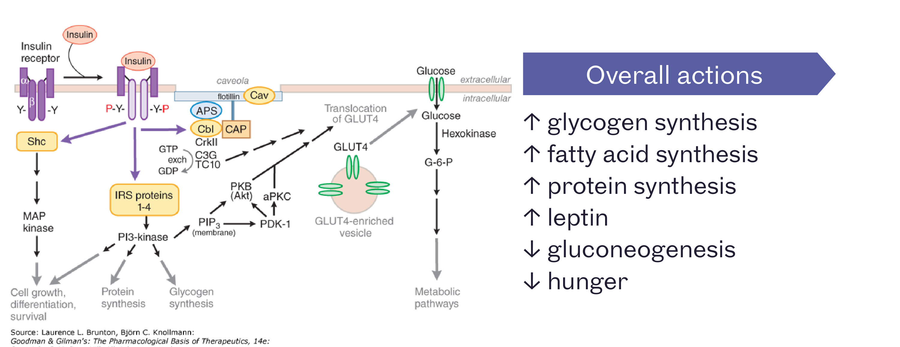
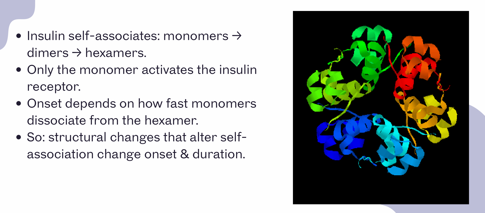
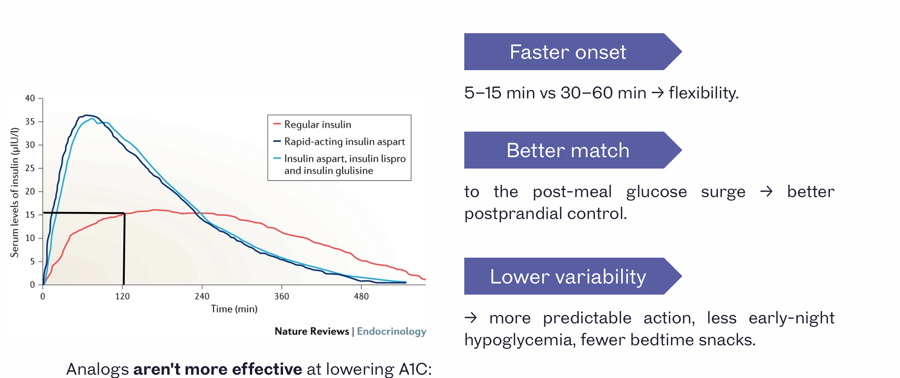

Pharmacology of Insulin
- Only the insulin monomer activates the receptor — onset speed depends on how fast hexamers dissociate into monomers.
- Rapid analogues (lispro/aspart/glulisine) aren't more effective than regular insulin at lowering A1c — just safer/more convenient. Regular insulin is still preferred for IV use.
- Endogenous insulin is cleared by the liver; exogenous (injected) insulin is cleared by the kidney — renal impairment can prolong its effect.
- Basal insulins are never used in pumps — only rapid-acting.
Learning Objectives
- Explain how insulin structure affects its pharmacokinetics (onset, peak, duration).
- Summarize the main pharmacological properties of the commonly used insulin preparations.
- Compare the advantages/disadvantages of different insulin preparations.
- Describe the adverse effects associated with insulin use.
What Is Insulin?
- A peptide hormone made by pancreatic β-cells: preproinsulin → proinsulin → mature insulin + C-peptide.
- Secreted into the portal circulation — the liver clears much of it on first pass.
- Very short half-life.
Physiology Recap: Control of Blood Glucose
Two states to know — fasting and prandial:

| Fasting state | Prandial state |
|---|---|
| Liver does glycogenolysis and gluconeogenesis, both driven by fatty acids and glucagon | Liver stops breaking down glycogen and instead takes up glucose for storage |
| Adipose tissue supplies fatty acids to fuel the process | Adipose tissue stops breaking down fat and starts storing it |
| — | Gut releases incretins, which stimulate β-cells to secrete insulin |
At the cellular level

This is glucose-mediated — a tight feedback loop. With exogenous insulin, that fine-tuned, glucose-dependent secretion is lost.
Insulin Actions
Insulin binds a tyrosine kinase receptor and triggers a large signalling cascade, ending in GLUT4 translocation to the cell membrane:

| Increases | Decreases |
|---|---|
| Glycogen synthesis | Gluconeogenesis |
| Fatty acid synthesis | Hunger |
| Protein synthesis | |
| Leptin |
Net effect: insulin is anabolic.
Clinical uses
- Management of diabetes
- Management of hyperkalemia
- Hyperglycemic crisis
- Diagnostic testing
Structure-Activity Relationship

- Onset of action depends on how fast monomers dissociate from the hexamer form.
- Structural changes that alter self-association change onset & duration: usually a change in amino acid sequence or addition of a chemical group (the name often hints at which). A change to the buffer is a physicochemical change (not structural).
Prandial / Bolus Insulins
Designed to release monomers faster — for prandial (mealtime) glucose control. Approved for use in insulin pumps.
| Insulin | Modification | Onset | Peak | Duration |
|---|---|---|---|---|
| Lispro | Proline/lysine reversed (B chain) | 10–15 min | 1–2 h | 3.5–6 h |
| Aspart | Proline → aspartic acid | 10–15 min | 40 min | 3–5 h |
| Glulisine | Asparagine→lysine, and lysine→glutamic acid (two separate substitutions); zinc-free | 5–15 min | 1 h | 3–5 h |
| Fast-Acting Aspart | Aspart + nicotinamide/arginine added | ~2.5 min | similar to Aspart | similar to Aspart |
| Regular (human) | — (unmodified) | 30–60 min | — | longer tail |

- Regular insulin doesn't peak fast enough to match a meal — that's why rapid-acting analogues are preferred for prandial dosing.
- Analogues aren't more effective at lowering A1C than regular insulin — they're just safer and more convenient (lower hypoglycemia risk, more flexible timing).
- Regular insulin is preferred for IV use: it's cheaper, better characterized, and dissociation kinetics don't matter when the dose goes straight into the bloodstream.
Basal Insulins
Designed to release monomers slower, for fasting glucose control, with minimal peak and a long duration.
| Insulin | Modification | Onset | Duration |
|---|---|---|---|
| NPH (intermediate) | Human insulin + protamine + zinc | 3–4 h | 10–16 h |
| Detemir (long) | ↑ self-aggregation (dihexamers) + albumin binding | 0.5–1 h | 16–24 h |
| Glargine (long) | Forms microprecipitates at neutral pH | 2–4 h | 20–24 h |
| Degludec (ultra-long) | Multi-hexamer formation + albumin binding | 0.5–1.5 h | > 42 h |
NPH carries a higher rate of nocturnal hypoglycemia than the long-acting analogues.
Insulin Icodec — once-weekly basal
A fatty diacid side-chain drives strong albumin binding (t½ ~196 h) plus reduced insulin-receptor affinity, giving a flat, ultra-long profile. Steady state takes ~3–4 weekly doses to reach — a loading dose may be needed, and missing a dose is a much bigger deal than with daily basal insulins.
Biphasic (premixed) insulins
| Mix | Advantage | Disadvantage |
|---|---|---|
| 75% Lispro protamine + 25% Lispro, or 70% Aspart protamine + 30% Aspart | Convenient — fewer injections/day | Less flexible; least physiologic regimen |
Adverse Drug Reactions
| Reaction | Why it happens |
|---|---|
| Hypoglycemia (most common) | Related to insulin's direct action on glucose |
| Weight gain | Related to insulin's anabolic actions |
| Lipohypertrophy | Repeated injections at the same site → slow, unpredictable absorption there |
| Immune/allergic reactions | Rare; usually to additives, not insulin itself |
Causes of hypoglycemia
- Missed meal, or unusually large amount of exercise
- Excess basal insulin when prandial coverage was actually needed
- No dose adjustment for activity level
- Loss of renal function (↓ clearance)
- Cognitive impairment, or an unfamiliar delivery device
- Interacting drugs (e.g. steroids)
Fundamentally: injected insulin's absorption kinetics can't reproduce the rapid rise-and-fall of endogenous insulin in response to real-time glucose changes.
Therapeutic Considerations
| Consideration | Key point |
|---|---|
| Concentration | Multiple concentrated formulations exist — double-check concentration with patients |
| Delivery route | IM, IV, SC, or inhaled. Absorption: IV fastest, then IM, then SC. Only regular insulin can be given IV |
| Renal function | Endogenous insulin is cleared by the liver; exogenous (injected) insulin is cleared by the kidney — dose adjustment may be needed with reduced renal function |
| Lipohypertrophy prevention | Rotate injection sites systematically |
| Allergic reactions | Try a different manufacturer |
| Insulin pumps | Basal insulins are not used in pumps (only rapid-acting); glulisine is associated with more clotting/occlusion issues in pumps |
| Mixing | Most basal insulins should not be mixed with other insulins before injection (different buffers) |
Adapted (not reproduced verbatim) from Fabiana Crowley, PhD, "Pharmacology of Insulin" lecture slides, Schulich School of Medicine & Dentistry, plus lecture notes.